PaceTown
“Find your pace. Grow your place.”
A cozy, pixel-art guided-work and recovery game for university students. PaceTown helps students see accumulated pressure, turn intimidating work into one manageable checkpoint, work alongside supportive guardians, regulate stress through short activities, and preserve a clear next action — without ever shaming or diagnosing. It gamifies sustainable pacing, not greater output.
What it is
- A playable support environment, not a dashboard
- Explains schedule pressure in plain language
- One manageable next step, never the whole week
- Equal paths: digital mini-games & real-world quests
- Local-first, private, accessible by design
What it is not
- No medical, therapy, or burnout-diagnosis tool
- No wellbeing leaderboard or productivity scoreboard
- No streaks, punishments, or decay for absence
- Not “upload homework, let AI finish it”
- Never claims generated work satisfies a course
University stress is rarely one assignment
Pressure comes from accumulated demands: classes, deadlines, part-time work, commuting, clubs, errands, low energy, and lost context after interruptions. Traditional tools each solve only one slice — planners show the work but not how to start it; focus timers measure time but not what to do; relaxation games give a break but leave the responsibility untouched.
PaceTown connects those missing pieces into one continuous loop: understand → make space → get help → recover → grow.
One continuous experience loop
Every piece of information leads to an action. A chart may explain pressure, but the town must help the student respond to it.
Understand
Enter or import mental, time, physical, social & errand commitments.
Make space
See explainable Daily Load; consent-based rebalancing of flexible work.
Do the work
One real task → one checkpoint → work alongside a guardian.
Regulate
Short in-app or real-world recovery before, during, or after.
Reflect & grow
Save partial progress & next action; grow a calmer town.
The product is broader than assignment help
Understand
Daily Load from time, priority, mental effort & urgency — explained in plain language, naming the largest contributors.
Make space
The Rebalance Workshop proposes safer placements for flexible work; every move is a preview until explicit approval.
Do the work
Guided Pace Sessions turn a real task into one visible checkpoint with a guardian.
Regulate
Five short mini-games for preparation, pauses, transitions & closure — no scores, no failure.
Reflect & return
Journal, Future Mailbox & saved session context so students never rebuild everything after a break.
Grow
Real progress, asking for help, recovery & realistic rescheduling grow a persistent town. Growth never decays.
Campus Grove — the first & only required world
The town is not decoration. It is the playable interface for deciding what to do, beginning real work, getting unstuck, and preserving progress. Every spatial interaction has a parallel semantic Town List for accessibility.
Eight anchor locations are shown in the compact map. Five supporting destinations complete the core town. Walk to a place—or use the matching Town List—to open that action; the map is the menu, not decoration.
Library · Mira
Understand, study, Firefly Stories.
Clock Tower · Kai
Forecast, sessions, rebalance, Chime Drift.
Garden · Sol
Scope reduction, recovery, Gentle Ripples.
Café · Sky
Body-doubling, Warm Cup.
Market · Goh
Errands, checks, Night Lanterns.
Town Hall
Task intake, briefs, work-plan review.
Rebalance Workshop
Consent-based movement of flexible tasks.
Recovery Garden
Persistent, non-destructive growth.
Home
Energy, sleep, Quiet Mode, and session closure.
Post Office
Journal, history, private reflections, and postcards.
Guardian Council plaza
One foregrounded recommendation when pressures compete.
Future Mailbox
Saved next actions and notes for a future session.
Calm Corner
Direct recovery access without prerequisites.
Load Weather makes all five demand areas visible without depicting damage: Library fog for mental load, faster Clock Tower movement for time pressure, avatar pacing and Garden cues for physical demands, Café activity for social load, and Market parcels for errands. Softer light can reflect optional low energy without confusing it with physical demand. Every effect also has a text & icon equivalent.
Five guardians — each changes what the student can do
Mira
Library. Interprets briefs, explains concepts, builds study checkpoints.
Kai
Clock Tower. Priorities, time estimates, rebalancing.
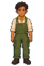
Sol
Garden. Reduces scope, protects breaks, recovery.
Sky
Café. Quiet body-doubling presence, gentle check-ins.
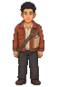
Goh
Market. Gathers materials, errands, final checks.
When several pressures compete, the Guardian Council gives one short interpretation per guardian and foregrounds a single recommendation: do one checkpoint · make space · recover first · gather what's missing · choose for myself. The Council proposes; the student decides.
Daily Load — deterministic & testable
The calculation separates demands from protective resources, so percentages never mix opposite meanings. Optional energy input adjusts guidance but never hides the raw time math.
Weighted Demand = Minutes × Priority × Mental-Effort × UrgencyDaily Load % = Total Weighted Demand ÷ Personalized Available Minutes × 100
How full is today? Teal = room to spare · Amber = getting tight · Plum = too much — slow down or move a task.
Every result includes available capacity, weighted demand, the largest contributors, and a reminder that this is schedule guidance, not a health assessment.
Recovery is offered, never forced
Neither digital nor real-world recovery receives better rewards. Outdoor access is never assumed — every outdoor quest has an indoor, mobility-compatible, or digital alternative.
Two ways to rest — on screen or in real life. Neither is "better"; both just help you feel a little lighter.
Digital mini-games (45–120s)
- Firefly Stories — reframe & settle (Mira)
- Chime Drift — slow a pressured transition (Kai)
- Gentle Ripples — paced sensory pause (Sol)
- Warm Cup — prepare a transition ritual (Sky)
- Night Lanterns — externalize & release (Goh)
IRL micro-quests (e.g. Pocket of Green)
- Step outside / open window / indoor plant, 5–10 min
- Notice one green, sky, light, or calming detail
- Self-confirm, or optionally verify with a photo
- Photo → private Pace Keepsake pixel art (local fallback)
- Paths: Done · Partly done · Changed my mind · Choose another
Shared rules: no required minimum, leave anytime without failure, audio muted by default with visual equivalents, reduced-motion alternatives, and a private Lighter / The same / Not sure response that tunes suggestions but is never a health score.
A Guided Pace Session
One of three primary responses (make space · handle what remains · recover). It turns a real task into one visible checkpoint the student owns.
One task at a time: get ready → work. If stuck, ask for help, pause, or shrink the task. Finish any which way — done, partly, blocked, or later.
Returning later shows only the last checkpoint, recorded progress, and saved next action — never missed-day shame or streak loss. The timer reaching zero never ends or completes a session.
Growth rewards the right things
XP, coins, and building upgrades reward starting, meaningful checkpoints, asking for help, realistic replanning, and intentional stopping — not raw hours or consecutive days. Photo users get no advantage over self-confirmation.
Accessibility, privacy & safety
Accessible
Keyboard + touch, visible focus, semantic controls, screen-reader live regions, Town List parity, reduced-motion & high-contrast modes, muted audio with visual equivalents.
Private
Local-first IndexedDB. Photos optional & removable; EXIF/location stripped; faces & documents trigger crop/redaction warnings. No public feed or wellbeing score.
Safe tone
No diagnosis, no punitive imagery, no forced check-ins. When pressure is high, choices shrink to one recommendation. Recovery content comes from reviewed templates.
What's built vs. planned
This repository is at the mentor-review vertical-slice stage. The planning and a large pixel-art asset milestone are complete; the app code currently demonstrates the intended direction.
- ✓Asset milestone complete — character bases, v4 animation packages (player + 5 guardians), 62-sheet runtime library, manifests & validation.
- ✓Interactive demo slice — campus movement (keyboard + touch), Sky proximity dialogue, one guided breathing activity, Town List, reduced-motion.
- ✓Vision & diagram suite — 17 Mermaid flow diagrams (this page's “Detailed flows”) plus an asset-handoff specification (
assets/NEXT_IMPLEMENTATION.md), covering the full loop, workload, rebalancing, Pace Sessions, recovery, Keepsakes, safeguards, and architecture. - ▢Next product milestone — load explanation, rebalancing, task intake, one Pace Session, Gentle Ripples, Pocket of Green IRL quest, photo→Keepsake flow, saved progress, one visible town response.
- ▢Planned later — full planner, remaining mini-games, Recovery Garden catalog, Journal/Collection, shop, profiles, cloud & Android.
How PaceTown works, diagram by diagram
These 17 diagrams are rendered from the visual companion PACETOWN_VISION_MERMAID.md. They summarize the authoritative product intent in PACETOWN_PROJECT_VISION.md and the behavior specified in PaceTown_Hackathon_Implementation_Plan.md. The graphics earlier on this page provide the at-a-glance version.
Each detailed diagram keeps its original readable label size. Scroll inside a diagram with a pointer, touch gesture, trackpad, or arrow keys after focusing it.
The big picture
1 · Track problem → PaceTown response → student outcomes
Five demand areas become explainable signals and concrete responses that lead to understood pressure, reduced load, real progress, intentional recovery, and a comforting tool the student keeps.
2 · Complete player experience loop
From opening PaceTown through entry, commitments, Daily Load, and the primary-response choice, to saving progress, rewards, town growth, and returning later.
Understand & make space
3 · Workload understanding & primary-response selection
Demand model (time, mental, physical, social, errands) plus optional check-in feeds a deterministic Daily Load, then PaceTown ranks Make space / Handle what remains / Recover first.
4 · Consent-based rebalancing
Flexible work is tested against deadline, availability, and minimum-session rules; fixed commitments stay locked. A preview with before/after values is shown, and every change requires explicit approval.
Guided work
5 · Guided Pace Session lifecycle
One real task → blocker → editable plan → one checkpoint → guardian → start or regulate. Help, scope reduction, and pause stay available; every outcome records a next action.
6 · Guardian assistance routing
Each guardian maps to specific actions; the student always reviews and owns the output before it is saved as an accepted plan and next action.
Regulate & recover
7 · Recovery activity choice
Digital and IRL paths are equal; constraints and preferences pick suitable options, with replace/decline always available, then a private Lighter / The same / Not sure response.
8 · Digital mini-game behavior
Firefly Stories, Chime Drift, Gentle Ripples, Warm Cup, and Night Lanterns share one contract: no score, failure, or forced duration, with muted and reduced-motion variants that restore Pace Session state.
9 · Detailed IRL quest catalogue
Ten IRL micro-quests (Pocket of Green, Look Up Find the Sky, One Gentle Loop, Make the Warm Cup, and more) with self-confirm or optional photo, equal rewards, and flexible completion.
Keepsakes
10 · Photo verification & Pace Keepsake pipeline
Optional photo → strip metadata → privacy scan → verify visible criteria only (uncertain/fail allow manual confirm) → choose a photo policy → generate pixel art (AI or local fallback) → approve → place privately. Rewards never change.
11 · Keepsake collection & placement
Approved keepsakes are sorted by category into a private collection and placed in Journal, Recovery Garden, town, or Future Mailbox — with no rarity, trading, feed, or completion pressure.
World, progression & safeguards
12 · Town locations & mechanics
Campus Grove districts (work, recovery, continuity) reached by spatial travel or the semantic Town List, opening contextual panels and Quiet Mode.
13 · Game progression without punishment
Meaningful actions grant XP, coins, and category growth that feed level, cosmetics, building upgrades, garden, and postcards — with no decay, streak loss, or pay advantage.
14 · Accessibility, privacy & safety gates
Every feature must pass the accessibility, privacy, and safety gates (no diagnosis, no punishment, student control, local-first, separate consent) before it ships.
Architecture & delivery
15 · Local-first product architecture
Experience layer → deterministic domain engines → provider adapters, all backed by IndexedDB, with a local-fallback engine covering every AI-assisted path.
16 · Hackathon vertical slice (Aina story)
The three-minute judging story: five demand areas, Thursday at 108%, one rebalance, one Pace Session with Mira, Gentle Ripples, Pocket of Green, and a private Garden Keepsake.
17 · Delivery priorities & expansion path
Foundation → core vertical slice → acceptance, then full games, quest/garden/collection expansion, shop, new environments, and production adapters.
